Strefa klimatyczna, jest to obszar Ziemi, przyjmujący zazwyczaj postać równoleżnikowego pasa, w obrębie którego podobny przebieg mają elementy klimatu wybrane jako podstawa wydzielenia strefy (najczęściej temperatura powietrza, opad, ciśnienia atmosferyczne).
Klimat definiowany jest jako przeciętny stan przyrody (fizyczny stan troposfery w danym miejscu i czasie) i poszczególnych jej składników, ustalony na podstawie wieloletnich obserwacji. Badania prowadzone przez klimatologów pozwoliły na dokonanie klasyfikacji warunków klimatycznych występujących na Ziemi. Najczęstszym kryterium podziału klimatów Ziemi na strefy klimatyczne jest ilość promieniowania słonecznego docierająca do powierzchni Ziemi. Jej bezpośrednim wyrazem jest zróżnicowanie temperatury powietrza, a pośrednim także intensywność wymiany wilgoci między powierzchnią Ziemi a atmosferą. Wielkość promieniowania słonecznego uzależniona jest przede wszystkim od szerokości geograficznej, dlatego też klimat Ziemi cechuje strefowość. Przebieg stref klimatycznych modyfikowany jest głównie przez geograficzne, astrefowe czynniki klimatotwórcze. W zależności od przyjętych kryteriów wydziela się kilka stref klimatycznych Ziemi, np. takich jak: równikowa, zwrotnikowa, podzwrotnikowa, umiarkowana ciepła, umiarkowana chłodna, okołobiegunowa. Podział na strefy klimatyczne nakłada się na podział na typy klimatu, co skutkuje wydzielaniem mniejszych jednostek.
Klimat równikowy
Strefa klimatów równikowych obejmuje Amerykę Środkową, wraz z morzem Karaibskim, północną część Ameryki południowej, środkową część Afryki, Madagaskar, Archipelag Malajski, Filipiny, północną Australię oraz wyspy Oceanii. Wyróżnia się najwyższą na planecie średnią temperaturą w ciagu roku i najwyższą roczną sumą opadów. W wyniku gorącego i wilgotnego klimatu w strefie równikowej występują rozległe lasy tropikalne w których żyje niezliczona liczba gatunków roślin i zwierząt, z których część nie została jeszcze nawet sklasyfikowana.
Warunki pogodowe
1. Roczna suma opadów
252 mm/m2
2. Roczna amplituda temperatur
5-10°C; ponad 20°C przez większą część roku.
3. Forma krajobrazu
dżungla, inaczej selwa
4. Cecha charakterystyczna
najbardziej wilgotne miejsce na świecie
Flora i fauna
W strefie klimatów równikowych występuje ogromna liczba gatunków roślin i zwierząt. Przewżają wysokie na 40-50 m wiecznie zielone drzewa, ponad które wyrastają mierzące nawet 70-90 m "olbrzymy leśne". Pozostałe gatunki stanowią liany (w lasach równikowych występuje 90% znanych gatunków lian) mchy, porosty oraz kwiaty, w tym storczyki.
Ze zwierząt w lesie równikowym przede wszystkim mozemy sie zetknąć z niesamowitą różnorodnością gatunków owadów, żywiących sie nimi płazów oraz ptaków, niekiedy posiadających niezwykle kolorowe pióra (papugi, kolibry). W lesie równikowym nie wystepuje zbyt wiele gatunków ssaków, przede wszystkim małpy, tapiry, kapibary oraz drapieżniki - tygrysy, pantery, jaguary.
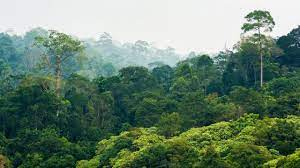
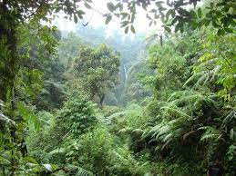
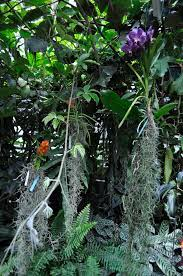
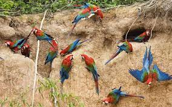
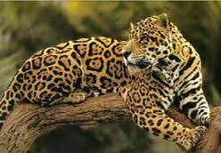
Klimat podzwrotnikowy
Strefa klimatów podzwrotnikowych obejmuje południową część kontynentu północnoamerykańskiego i południowoamerykańskiego, środkową część Afryki i Azji oraz większość obszaru Australii. Charakteryzuje się gorącym klimatem i ubogą szata roślinna, na którą składają sie przede wszystkim trawy. W ciagu roku występuje tzw. pora sucha, gdy prawie nie pada, a temperatura drastycznie się podnosi oraz pora deszczowa, gdy pada niemal codziennie.
Warunki pogodowe
1. Roczna suma opadów
150 - 180 mm/m2 (w porze deszczowej)
2. Roczna amplituda temperatur
25°C (od 10-18°C w porze deszczowej do 35°C w porze suchej)
Roślinność i występujące w klimacie podzwrotnikowym gatunki zwierząt są uzależnione od regionu występowania. W Afryce tereny te określane są mianem sawanny. Występują na nich głównie trawy, czasem kolczaste krzewy lub drzewa akacji, zaś ze zwierząt można tam spotkać duze stada słoni, zebr, bawołów, lwy, gepardy, guźce, likaony oraz miodożery. W Ameryce południowej obszar klimatu podzwrotnikowego określany jest mianem pampy i jest to w większości trawiasta równina zamieszkana przez jelenie, lisy oraz liczne gatunki ptaków. W Europie i Azji mamy z kolei do czynienia ze stepem, który również jest równiną porośnietą głównie trawami i bylinami, zamieszkany głównie przez gryzonie, ptaki lub migrujące stada suchaków.
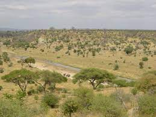
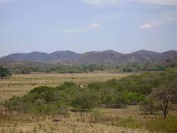
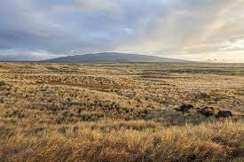
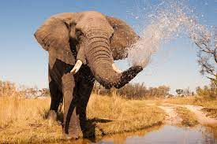
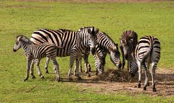
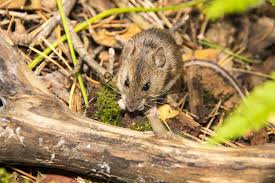
Klimat zwrotnikowy
Strefa klimatów zwrotnikowych charakteryzuje się najsuchszym klimatem na planecie oraz najwyższymi dobowymi różnicami temperatur. W dzień można zanotować do 50°C, zaś nocą temperatura może spaść do -30°C. W tej strefie ukształtowały się największe pustynie i najsuchsze obszary na świecie. Spośród rodzajów pustyń występujących w tej strefie wyróżniamy pustynie kamieniste, żwirowe, piaszczyste (Sahara) oraz ilaste (rejon Bliskiego Wschodu). Co jakiś czas na pustyni zdarzają się ulewne deszcze, które zapełniają wyschnięte koryta rzek (tzw. wadi).
Z powodu trudnych warunków na pustynii występuje zaledwie kilka gatunków roślin, głównie kaktusy, kolczaste krzewy i sukulenty (rośliny pozostające przez większą część czasu w stanie uśpienia, rosnące i rozmnażające się w czasie deszczu). Ze zwierząt na pustynii można spotkać stada wielbłądów, szakale, antylopy, fenki, jaszczurki, agamy lub pająki pustynne. Na pustynii australijskiej dodatkowo można spotkać molocha kolczastego, gryzonie lub torbacze.
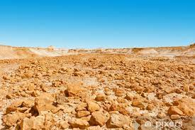
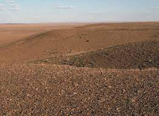
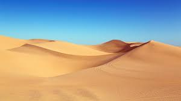
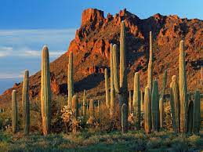
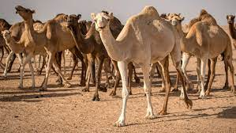
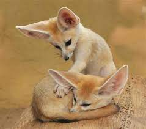
Klimat śródziemnomorski
Strefa klimatów śródziemnomorskich występuje jak wskazuje nazwa w regionie Morza Śródziemnego, ale też np. w Kalifornii, Chile na południu Afryki oraz południowym wybrzeżu Australii. Charakteryzuje sie gorącym upalnym latem oraz łagądną deszczową zimą. Na roślinność skłądają się drzewa oliwkowe, cytrusy, cyprysy, pistacje oraz gęste kolczaste zarośla, zwane makią. W regionie Morza Śródziemnego można zaobserwować różnorodna faunę: żółwie, jaszczurki, kozice na terenach wyżynnych.
Warunki pogodowe
1. Roczna suma opadów
50-60 mm/m2
2. Roczna amplituda temperatur
20°C (ok. 10°C w zimie, +30°C w lecie)
3. Forma krajobrazu
Makia
4. Cecha charakterystyczna
Najlepszy klimat do życia;)
Flora i fauna
Rodzima roślinność obszarów o klimacie śródziemnomorskim musi być przystosowana do przetrwania długich, gorących letnich susz latem i długich okresów wilgotnych zimą. Przykłady roślinności śródziemnomorskiej obejmują:
Wiecznie zielone drzewa: wawrzyn, eukaliptus, grevillea, kazuaryna, melaleuca, sosna i cyprys
Drzewa liściaste: jawor, dąb i buckeys;
drzewa owocowe: oliwka, figi, orzechy włoskie i winogrona;
krzewy: rozmaryn, Erica, Banksia, chamise;
podkrzewy : lawenda, halimium i szałwia;
trawy: typy murawowe, triandra tematyczna, trawy pęczakowe; turzyce i sitowie;
zioła: Achillea, Dietes, Kocanka i Penstemon.
Zwierzeta występujące w tym obszarze to w większości: żółwie, jaszczurki, kozy, ptaki (w tym bociany), sporadycznie jelenie lub dziki.
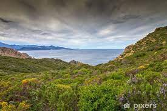
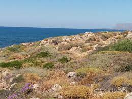
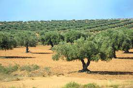
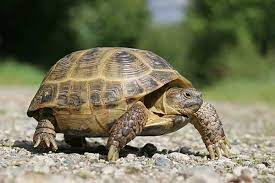
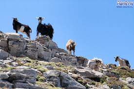
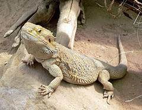
Klimat umiarkowany
Jest to jedna z najrozleglejszych stref klimatycznych obejmujących większość Europy i Azji, środkową część Ameryki północnej i Południowej oraz południową część Afryki. Charakteryzuje sie wystepowaniem 4 pór roku, bogatą szatą roślinną i występowaniem wielu gatunków zwierząt. Mogą one różnić się między sobą w wyniku niekiedy dużego zróżnicowania warunków klimatycznych w tej strefie klimatycznej.
Warunki pogodowe
1. Roczna suma opadów
50 mm/m2 (opady cały rok, w zimie opady śniegu)
2. Roczna amplituda temperatur
do 55°C (do -20°C w zimie, 30°C w lecie)
3. Forma krajobrazu
Lasy lisciaste, bądź iglaste
4. Cecha charakterystyczna
Cztery pory roku
Flora i fauna
W strefie klimatów umiarkowanych wystepują zarówno lasy lisciaste, któych drzewa zrzucaja liście na zimę, jak i iglaste, któe posiadają igły. Igły nie gromadzą tyle wody co liscie, więc drzewa te są wiecznie zielone. Drzewa lisciaste zazwyczaj występują na obszarach nizinnych, zaś iglaste na chłodniejszych obszarach na północy lub na wyzynach i górach. Mogą również zdarzać się lasy mieszane. Ze zwierząt, w strefie klimatów umiarkowanych można spotkać wilki, jelenie, dziki, zajace, bobry, liczne gatunki ptaków, w tym bociany, jastrzębie, kuropatwy, przepiórki, głuszce, żólwia błotnego, jaszczurki, węże, żaby i liczne gatunki owadów.
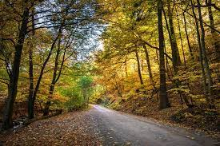
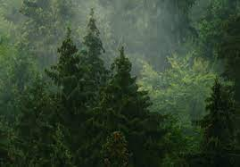
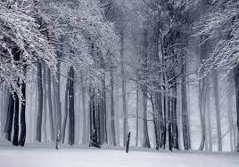
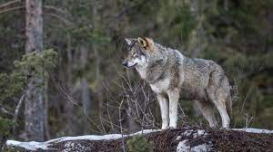
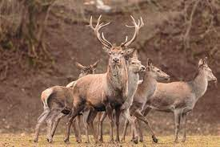
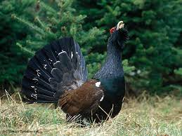
Klimat subpolarny
Strefa klimatów subpolarnych (lub też okołobiegunowych) obejmuje głównie północną Europę, północną część Azji, Islandię, Syberię, Alaskę i północną Kanadę. Charakteryzuje się występowaniem tzw. "wiecznej zmarzliny" czyli zamarzniętymi wodami gruntowymi, co uniemożliwia roślinności zapuszczanie korzeni, prze co rosną tam głównie mchy, porosty i małe krzewy. Większosć mieszkających w tym środowisku zwierząt ma grube futro, co pozwala im przetrwać zimne temperatury. W strefie klimatów subpolarnych wystepuje krótkie, ciepłe lato (do 10°C)i długa mroźna zima.
Warunki pogodowe
1. Roczna suma opadów
ok. 250 mm/m2 (głównie opady śniegu)
2. Roczna amplituda temperatur
ok. 40°C (10°C w lecie, -30°C w zimie)
3. Forma krajobrazu
Tundra
4. Cecha charakterystyczna
Wieczna zmarzlina
Flora i fauna
Zarówno rośliny jak i zwierzęta żyjące w strefie klimatów subpolarnych musiał się przystosować do niesprzyjających warunków. Wieczna zmarzlina, ustepująca najwyżej kilknaście centymetrów w głąb gruntu w okresie letnim spowodowała, że większość roślin nie może zapuścić korzeni w glebie, przez co w szacie roślinnej dominują wchy i porosty, tworząc specyficzna formację roślinną nazywaną tundrą. Na tych terenach wysepują wilki, lisy, renifery, niedźwiedzie polarne, sowy śnieżne, gryzonie, przede wszystkim lemingi oraz owady, w tym dużo gatunków komarowatych, które poza okresem letnim hibernują.
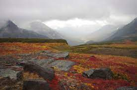
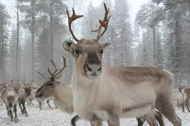
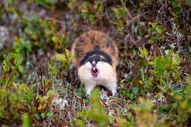
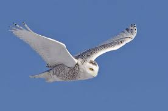
Klimat polarny
Ta strefa klimatyczna wystepuje w rejonach bieguna północnego i południowego, charakteryzuje się najzimniejszym klimatem na naszej planecie i jednymi z najbardziej niesprzyjających warunków do życia. Na obszarze biegunów wystepuje zjawisko dnia i nocy polarnej (dzień trwa pół roku), przez co, przez połowę roku panuje tam noc. Temperatury mogą stać sie wtedy ekstremalnie niskie, osiągając nawe -80°C. Większość obszaru obu biegunów jest pokryte grubą warstwą lodu, tworzącą pustynię lodową.
Warunki pogodowe
1. Roczna suma opadów
0 (z wyjątkiem okresów opadów śniegu, które jednak rzadko docierają w głąb lądu)
2. Roczna amplituda temperatur
80°C (ok. 0°C w okresie letnim do -70/-80°C w okresie zimowym)
3. Forma krajobrazu
Pustynia lodowa
4. Cecha charakterystyczna
Najzmniejsze miejsce na świecie
Flora i fauna
Niewiele organizmów jest w stanie przetrwać w tym środowisku. Większość koncentruje się na wybrzeżach. Z roślinności można tu znaleźć mchy, porosty, oraz plankton w przybrzeżnych wodach. Fauna jest troche bardziej zróżnicowana, z tym, że różni sie w zależności od biegunów. Na obu występują różnorodne gatunki fok, na północnym można spotkać niedźwiedzie polarne, na południowym zaś liczne gatunki pingwinów tworzące duże kolonie. Antarktyda jest ponadto schronieniem dla wielu gatunków ptaków (albatrosy, rybitwy, kormorany), zaś w przybrzeżnych wodach obu obszarów można natknąć się na liczne gatunki ryb oraz waleni. Żywią się one planktonem i bujną roślinnościa morską, któej egzystencja jest możliwa dzieki opływających oba bieguny ciepłych prądach.